#9173 Agenten sterben einsam
Alternativ: Where Eagles Dare
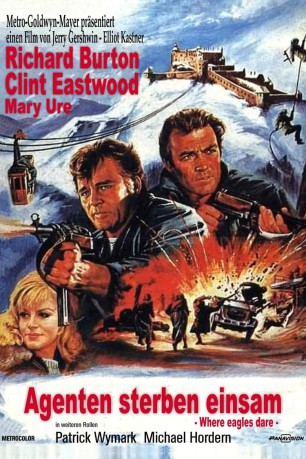 
 IMDB-Wertung: 7.7 / 10
IMDB-Wertung: 7.7 / 10  Metascore: 0
Metascore: 0 
Deutschland 1944: Über Bayern wird ein Flugzeug der Alliierten abgeschossen. Ein amerikanischer General wird gefangen genommen und in ein schwer befestigtes Schloss in den Bergen verschleppt. Bevor er etwas über die bevorstehende Invasion der Amerikaner (D-Day) ausplaudern kann, soll ihn eine Spezialeinheit unter der Leitung des britischen Majors Smith befreien. Doch schon bald werden Mitglieder des Teams unter merkwürdigen Umständen getötet und auch die Deutschen scheinen über jeden Schritt der Einheit bestens informiert. Lieutenant Schaeffer der einzige Amerikaner unter den Briten, beginnt am tatsächlichen Ziel der Mission zu zweifeln.
Jahr: 1968
Dauer: 155 Minuten
FSK: 16
Land: England Studio: A Metro-Goldwyn-Mayer ReleaseTonspuren: DD2.0 - ,
Untertitel: Deutsch,
Auflösung: 1080p (1920x800) Größe: 7526 MB
Genre: Action, Abenteuer, Krieg
Regisseur: Brian G. Hutton
Drehbuch: Alistair MacLean
Soundtrack: Ron Goodwin
Darsteller:
- 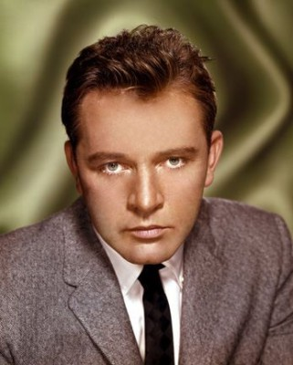 Richard Burton als Maj. Smith
- 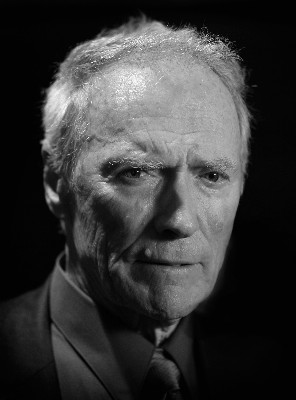 Clint Eastwood als Schaffer
- Mary Ure als Mary Ellison
- Patrick Wymark als Col. Turner
- 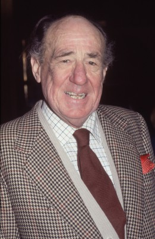 Michael Hordern als Adm. Rolland
 Donald Houston als Christiansen
Donald Houston als Christiansen- Peter Barkworth als Berkeley
- 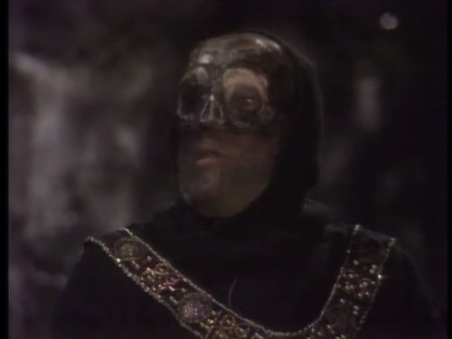 William Squire als Thomas
- 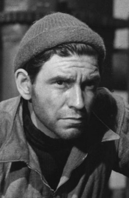 Robert Beatty als Carnaby
- Brook Williams als Sgt. Harrod
- Neil McCarthy als Sgt. Jock MacPherson
- 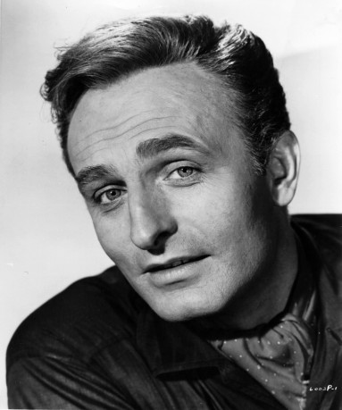 Anton Diffring als Col. Kramer
- 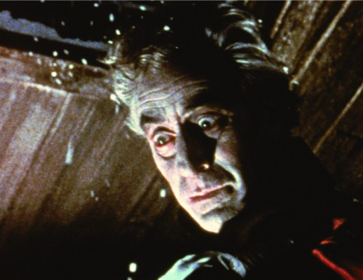 Ferdy Mayne als Rosemeyer
- Derren Nesbitt als Von Hapen
- Victor Beaumont als Col. Weissner
- Ingrid Pitt als Heidi
 Roy Beck als German Cablecar Engineer (uncredited)
Roy Beck als German Cablecar Engineer (uncredited)- Ivor Dean als German Officer #2 (uncredited)
- Guy Deghy als Maj. Wilhelm Wilner (uncredited)
- 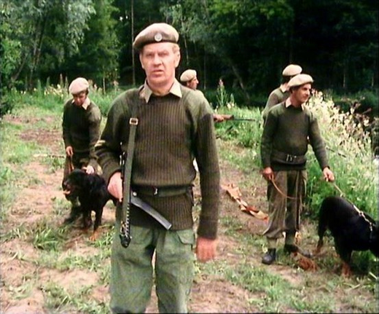 Max Faulkner als Sgt. Hartmann (uncredited)
- 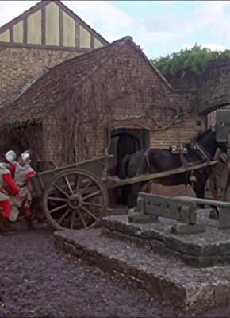 Harry Fielder als German Soldier (uncredited)
- 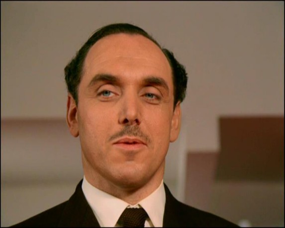 John G. Heller als German Major - at 'Zum Wilden Hirsch' (uncredited)
- Ian McCulloch als German Officer (uncredited)
 Anton Rodgers als German Officer at Airfield (uncredited)
Anton Rodgers als German Officer at Airfield (uncredited)- Bill Sawyer als Helicopter Pilot (uncredited)
- 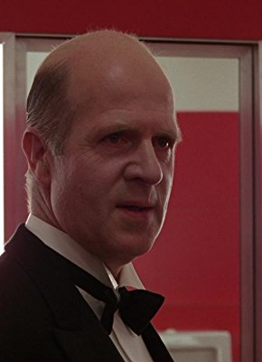 Philip Stone als Sky Tram Operator (uncredited)
- Vincent Ball als Carpenter
- Richard Beale als Telephone Orderly (uncredited)
- Terence Conoley als Nazi (uncredited)
- Jim Dowdall als German Officer on Stairs (uncredited)
- Lyn Kennington als German Woman (uncredited)
- Nigel Lambert als Young German Soldier (uncredited)
- Olga Lowe als Lt. Anne-Marie Kernitser (uncredited)
- Terence Mountain als German Radio Op (uncredited)
- Derek Newark als German Major (uncredited)
- Jim O'Brady als Waiter at Zum Wilden Hirsch (uncredited)
- Edward Michael Perry als German Soldier (uncredited)
- Peter Roy als German Soldier (uncredited)
- Jack Silk als German Officer at Ammunitions Shed (uncredited)
- Jim Tyson als Innkeeper (uncredited)
- Ernst Walder als Airport Control Officer (uncredited)
Datei: X:\1968\Agenten sterben einsam (1968, FSK16, 1920x800).mkv seit 19.07.2018
Festplatte: HD 1900-1970
 Es gibt insgesamt 25 Filme in der Gruppe '1968'
Es gibt insgesamt 25 Filme in der Gruppe '1968'